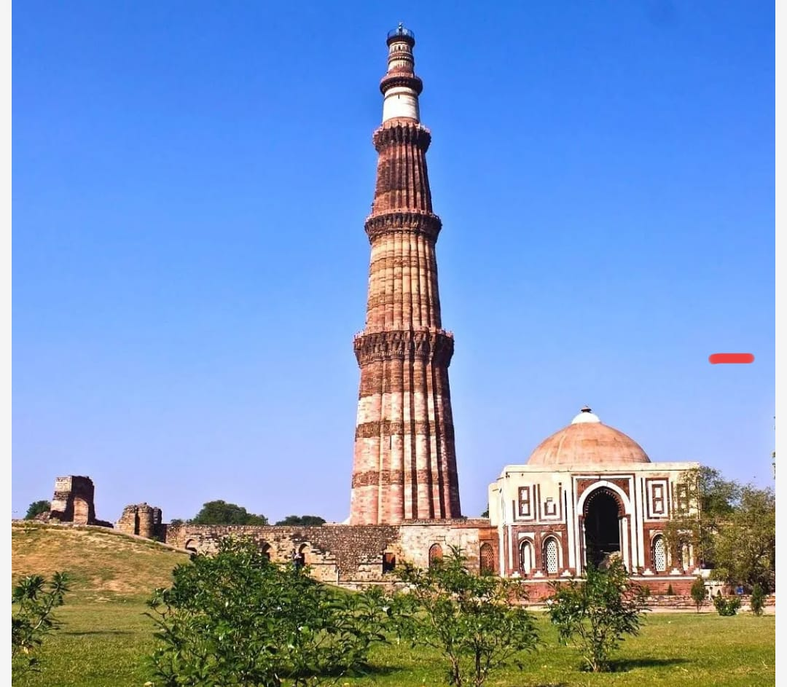
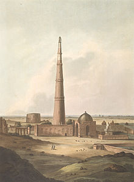

The Qutb Minar, also spelled Qutub Minar and Qutab Minar, is a minaret and "victory tower" that forms part of the Qutb complex, which lies at the site of Delhi's oldest fortified city, Lal Kot, founded by the Tomar Rajputs. It consists of 399 steps It is a UNESCO World Heritage Site in the Mehrauli area of South Delhi, India. It is one of the most visited tourist spots in the city, mostly built between 1199 and 1220.
It can be compared to the 62-metre all-brick Minaret of Jam in Afghanistan, of c. 1190, which was constructed a decade or so before the probable start of the Delhi tower. The surfaces of both are elaborately decorated with inscriptions and geometric patterns. The Qutb Minar has a shaft that is fluted with "superb stalactite bracketing under the balconies" at the top of each stage.In general, minarets were slow to be used in India and are often detached from the main mosque where they exist.
In recent years, the Qutub Minar has been illuminated for special occasions involving international relations. In September 2023, the monument was lit up in the colors of the Mexican flag to celebrate Mexico's 213th Independence Day, an event that was acknowledged and appreciated by the Embassy of Mexico in India. Similarly, on October 30, the Qutub Minar was illuminated with the Turkish flag to commemorate the 100th anniversary of the Republic of Turkey, an occasion that received special attention from the Turkish Embassy in New Delhi.

The tower includes elements of traditional Islamic architecture and southwestern Asian design. Elizabeth Lambourn's Islam Beyond Empires: Mosques and Islamic Landscapes in India and the Indian Ocean studies the introduction of Islam in South Asia and how the region influenced the Islamic religious architecture.These newly arrived Muslims from the Islamic West escaped the Mongol Empire and emigrated to India, where they constructed religious centers. The Qutb Minar serves as a central marker to these new Muslim communities as well as being a reminder of Islam's presence in the area.The architecture of the minaret varies greatly from that of the typical style and design of the mosques constructed in the Middle East. The style of these structures is influenced by the local architecture such as the Indic temples. This affected the different materials, techniques, and decoration that were used in the construction of the Qutb Minar.
Historically, tower minarets were uncommon in South Asian-Islamic design until the 17th century, due to the slow adoption of the typical Middle Eastern style in India.It is also detached from the main mosque, showcasing how the native culture affected the design of a Middle Eastern structure.The Qutb Minar is seen as the "earliest and best example of a fusion or synthesis of Hindu-Muslim traditions" according to Ved Parkash in his essay The Qutb Minar from Contemporary and Near Contemporary Sources.Like many mosques built in South Asia during this time period, the minaret was constructed by Hindu laborers and craftsmen but overseen by Muslim architects.[15] This led to a construction that synthesized both Hindu and Islamic religious architecture. Since some of the craftsmen were Hindu and unfamiliar with the Quran, the inscriptions are a compilation of disarranged Quranic texts and other Arabic expressions.
History
The Qutb Minar was built over the ruins of the Lal Kot, the citadel of Dhillika. Qutub Minar was begun after the Quwwat-ul-Islam Mosque. Drawing references from their Ghurid homeland, Qutub-ud-Din Aibak and Shamsu’d-Din Iltutmish constructed a minar (minaret) at the south-eastern corner of the Quwwatu’l-Islam between 1199 and 1503.
It is usually thought that the tower is named for Qutb-ud-din Aibak, who began it. It is also possible that it is named after Khwaja Qutbuddin Bakhtiar Kaki a 13th-century sufi saint, because Shamsuddin Iltutmish was a devotee of his.
The Minar is surrounded by several historically significant monuments of the Qutb complex. Quwwat-ul-Islam Mosque, to the north-east of the Minar was built by Qutub-ud-Din Aibak in A.D. 1199. It is the earliest extant - mosque built by the Delhi Sultans. It consists of a rectangular courtyard enclosed by cloisters, erected with the carved columns and architectural members of 27 Jain and Hindu temples, which were demolished by Qutub-ud-Din Aibak as recorded in his inscription on the main eastern entrance.[18] Later, a lofty arched screen was erected, and the mosque was enlarged, by Shams-ud- Din Itutmish (A.D. 1210–35) and Ala-ud-Din Khalji. The Iron Pillar in the courtyard bears an inscription in Sanskrit in Brahmi script of fourth century A.D., according to which the pillar was set up as a Vishnudhvaja (standard of god Vishnu) on the hill known as Vishnupada in memory of a mighty king named Chandra.
TO KNOW MORE GO TO PLACES